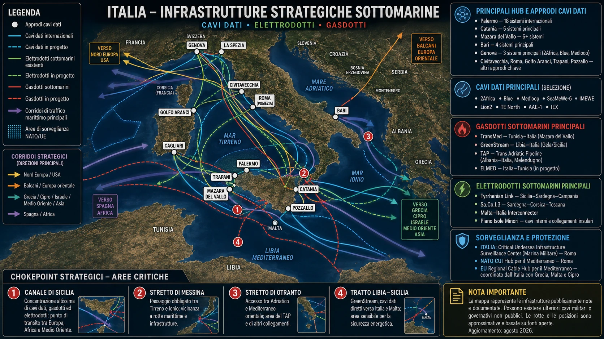

IL MARE CHE NON VEDEVAMO
Il 27 gennaio 2026 la fregata italiana ITS Virginio Fasan segue nel Mediterraneo il sommergibile russo B-265 Krasnodar, accompagnato dal cacciatorpediniere Severomorsk. Il 4 febbraio un’altra formazione russa — Severomorsk, Kama e Sparta IV — attraversa il Canale di Sicilia e viene nuovamente monitorata nel Tirreno, vicino alla Sardegna.
Preso da solo, è un episodio navale. La Russia possiede sommergibili, la NATO li segue, le marine fanno il loro mestiere. È quasi una non-notizia. Finché non si guarda sotto.
Sotto quel mare passa oggi una parte del sistema nervoso europeo. Oltre il 95% del traffico intercontinentale viaggia su cavi sottomarini; il rapporto di lavoro da cui è partita la ricerca attribuisce a queste infrastrutture anche il supporto a oltre 10.000 miliardi di dollari al giorno di transazioni finanziarie internazionali. Nel Mediterraneo si concentrano cavi di telecomunicazione, collegamenti elettrici, gasdotti, oleodotti e infrastrutture governative e militari. Il Canale di Sicilia e Gibilterra sono strozzature naturali di questo sistema.
L’Italia è nel mezzo. Palermo è collegata a numerosi cavi internazionali; BlueMed unisce Genova, Golfo Aranci, Pomezia e Palermo e prosegue verso il Mediterraneo orientale. Catania, Mazara del Vallo, Bari e Genova sono altri punti di approdo. Sotto lo stesso mare corrono il TransMed dall’Algeria alla Sicilia, il GreenStream dalla Libia a Gela, il TAP nell’Adriatico, il Tyrrhenian Link, ELMED tra Sicilia e Tunisia, Sa.Co.I. e i collegamenti con Malta.

Negli anni Settanta seguivamo i sommergibili sovietici perché sapevamo di essere in Guerra fredda. Nel 2026 li seguiamo di nuovo. Solo che oggi, sotto il loro scafo, passa anche una parte del sistema nervoso dell’Europa.
Il Krasnodar non è una prima volta. L’Unione Sovietica mantenne dal 1967 una presenza navale permanente nel Mediterraneo con la 5ª Eskadra, in confronto con la Sixth Fleet statunitense. I sommergibili sovietici erano una presenza normale nel bacino. La novità non è dunque il ritorno di un battello russo. È il Mediterraneo che quel battello ritrova.
Durante la parentesi siriana la presenza russa aveva anche una spiegazione immediata: Tartus, la guerra in Siria, la proiezione militare a sostegno di Assad. Dopo la caduta del regime siriano nel dicembre 2024 e la crisi del supporto russo a Tartus, quella spiegazione smette di bastare. Nel 2025 la presenza subacquea russa nel Mediterraneo risulta fortemente ridotta. Nel 2026 il Krasnodar ricompare.
E allora la domanda non è più semplicemente dove stia andando. La domanda è che cosa sia tornato a valere, per Mosca, in questo mare.
QUANDO IL FONDALE DIVENTA UN DOMINIO
Il sommergibile è solo il primo filo. Tirandolo, ne vengono fuori altri.
Nel maggio 2025 l’Unione Europea sanziona Norebo JSC e Murman Sea Food inserendo nelle motivazioni attività di sorveglianza e spionaggio condotte anche tramite pescherecci contro infrastrutture civili e militari critiche, compresi i cavi sottomarini. Il governo britannico descrive Yantar come una nave-spia impegnata a raccogliere intelligence e a mappare infrastrutture sottomarine critiche. Nel 2025 la Royal Navy rende pubblica perfino una dimostrazione di sorveglianza nei suoi confronti tramite un sommergibile britannico.
L’11 maggio 2026 Windward segnala la petroliera russa sanzionata SAGA ferma direttamente sopra una rete di cavi vicino a Creta, con la posizione corroborata da sensori ottici e radar SAR. Nello stesso trimestre registra oltre 34.000 eventi di navigazione a bassa velocità in prossimità di rotte di cavi note e un aumento dell’80,6% degli eventi classificati ad alto rischio associati a specifiche navi.
Una nave civile resta una nave civile. Ma rotta, velocità, permanenza e posizione sono anche dati. E quando a quei dati si affiancano unità specializzate, sanzioni europee per attività di sorveglianza, una struttura russa come il GUGI dedicata alle operazioni in acque profonde e un ritorno della competizione antisommergibile, il fondale smette di essere solo il posto dove abbiamo posato i cavi.
Diventa un dominio.
E SE LO AVESSIMO GIÀ CAPITO?
È a questo punto che la risposta italiana cambia il significato delle notizie precedenti.
Dopo il sabotaggio dei Nord Stream del 2022 la Marina italiana avvia Fondali Sicuri. Nel 2026 Nave Numana resta in missione dal 4 gennaio al 12 luglio: 189 giorni, anche per la tutela di cavi, piattaforme e dei gasdotti TAP, GreenStream e TransMed. Tra l’8 e l’11 marzo Nave Gaeta esegue una bottom survey del TAP con sonar e mezzi subacquei; la Marina dichiara che controlli di questo tipo vengono svolti con continuità sui principali gasdotti dal 2022.
Mediterraneo Sicuro passa da circa 160.000 a circa 2 milioni di chilometri quadrati di area operativa. Nel primo semestre 2026 l’Italia comanda per 177 giorni lo Standing NATO Maritime Group 2. Dal 3 giugno Caio Duilio guida un dispositivo NATO Sea Guardian nel Mediterraneo centrale. Dal 22 giugno l’Italia guida la Task Force X - Central Mediterranean, che integra informazioni provenienti da terra, mare, aria, cyber, spazio, spettro elettromagnetico e dominio underwater.
Il sommergibile Romeo Romei trascorre 98 giorni tra Mediterraneo occidentale e Atlantico per sorveglianza e controllo della dimensione subacquea. A febbraio la NATO svolge Dynamic Manta al largo della Sicilia. A giugno l’Unione Europea avvia i primi Regional Cable Hubs e affida all’Italia, con Grecia, Malta e Cipro, il coordinamento di quello mediterraneo.
Se il fondale fosse ancora soltanto un’infrastruttura tecnica, non lo staremmo trattando come un fronte da sorvegliare.
Non serve che qualcuno lo dichiari in conferenza stampa. Lo dicono le missioni, la loro durata, la geografia, i sonar, i comandi, l’integrazione tra intelligence e dominio subacqueo. L’Europa non sta aspettando di capire se i fondali siano diventati strategici. Si sta già comportando come se lo fossero.
IL PASSO SUCCESSIVO NON È AFFONDARE UN CAVO
A questo punto il ragionamento cambia scala. Se una guerra aperta contro la NATO ha un costo enorme e una soglia politica e militare altissima, la domanda non è perché Mosca dovrebbe attaccare l’Europa. È perché dovrebbe farlo nel modo più costoso possibile.
L’Unione Europea considera la strumentalizzazione della migrazione, la disinformazione, i cyberattacchi, il sabotaggio e la pressione sulle infrastrutture tra gli strumenti utilizzabili nelle campagne ibride. La crescente influenza russa nel Sahel e la presenza militare russa nella Libia orientale hanno alimentato in Europa il timore che anche i flussi migratori mediterranei possano diventare terreno di pressione politica. Nello stesso quadro, le istituzioni europee collegano le attività ibride russe al tentativo di frammentare le società, indebolire i processi decisionali e ridurre il sostegno all’Ucraina.
Qui il fondale torna dentro la storia. Perché un cavo non deve necessariamente essere tagliato per produrre un costo. Basta costringere l’avversario a sorvegliarlo, ridondarlo, proteggerlo, ripararlo più rapidamente, moltiplicare navi, sensori e strutture di coordinamento. La vulnerabilità, quando viene percepita, costa già prima dell’attacco.
Lo stesso vale per l’informazione, per l’energia, per la pressione migratoria, per la paura. Non serve controllare tutto. Serve aumentare il prezzo politico dell’unità europea.
SE FOSSE questo il punto? Destabilizzare costa meno che bombardare.
Non significa che ogni crisi europea abbia una regia russa. Significa qualcosa di più concreto: gli strumenti esistono, vengono riconosciuti come strumenti di guerra ibrida, e hanno una caratteristica comune. Possono colpire la coesione senza obbligare Mosca a entrare nella guerra che più le converrebbe evitare: quella diretta contro la NATO.
LA SOGLIA CHE NON CONVIENE SUPERARE
La NATO conta 32 Paesi. L’Articolo 5 considera un attacco armato contro un Alleato come un attacco contro tutti e obbliga gli altri Stati ad assisterlo con le azioni che ritengono necessarie, incluso eventualmente l’uso della forza. Non è un interruttore automatico che produce la stessa risposta militare in trentadue capitali. Ma è la soglia che trasforma un episodio locale in una crisi dell’Alleanza.
Per una strategia di pressione la regola diventa quasi matematica: abbastanza forte da creare costo, paura, divisione e spesa; non abbastanza forte da produrre una risposta collettiva incontrollabile.
La pressione deve essere abbastanza forte da destabilizzare, ma non abbastanza forte da ricompattare l’Alleanza.
Ed è qui che la presunta debolezza europea mostra il suo lato meno comodo per chi prova a sfruttarla. L’Europa non è un solo sistema politico. Polonia, Paesi baltici e Finlandia non leggono la Russia con la stessa memoria storica di altri Paesi occidentali. Occupazioni, deportazioni, governi imposti e perdita di sovranità durante l’era sovietica non sono materiale da museo: influenzano ancora la soglia di tolleranza politica.
Una provocazione pensata per spaventare può produrre l’effetto opposto. Ciò che a Mosca può apparire come pressione controllata può essere letto altrove come minaccia esistenziale. La frammentazione europea è quindi una vulnerabilità, ma anche un elemento di imprevedibilità.
Confondere la frammentazione europea con passività europea può essere l’errore di calcolo più pericoloso.
POI WASHINGTON CAMBIA IL PESO DELLA PARTITA
Fin qui potremmo fermarci a una nuova Guerra fredda combattuta soprattutto nella zona grigia. Ma nel 2025 e nel 2026 cambia un’altra variabile: gli Stati Uniti.
Tra febbraio e marzo 2025 l’amministrazione Trump sospende temporaneamente aiuti militari e condivisione di intelligence con Kyiv. Regno Unito e Francia accelerano una Coalition of the Willing e l’Europa torna a discutere in termini molto concreti di garanzie di sicurezza, autonomia e capacità finanziarie comuni. La sospensione americana mette in evidenza quanto l’Ucraina e l’Europa dipendano ancora da capacità ISR statunitensi — intelligence, sorveglianza e ricognizione.
Nel 2026 Zelensky chiede licenze americane per produrre missili Patriot. Washington si mostra disponibile a discuterne ma resta prudente sul trasferimento di tecnologie sensibili. Il segnale non è un abbandono automatico dell’Ucraina. È una selettività maggiore: costo, esposizione, tecnologia, ritorno.
Se l’Europa deve sostenere una quota crescente del peso della guerra, allora la coesione europea vale di più. E, per la stessa ragione, vale di più anche per chi vuole indebolirla.
SE FOSSE la riduzione dell’esposizione americana ad aver aumentato il valore strategico delle divisioni europee?
A quel punto cavi, fondali, disinformazione, pressione migratoria, energia e opinione pubblica non sono più temi paralleli. Sono terreni diversi sui quali può essere aumentato il costo interno del sostegno a Kyiv senza affrontare direttamente la NATO.
L’UCRAINA NON È SOLO TERRA
Anche il significato del territorio ucraino cambia quando si smette di guardarlo soltanto sulla carta militare.
Nel febbraio 2023 il governo ucraino indicava oltre 2.000 depositi e giacimenti nei territori occupati, con un valore complessivo stimato superiore a 12.000 miliardi di dollari. Documenti successivi sulle materie prime critiche collocano una parte significativa dei depositi di litio nelle regioni occupate dalla Russia. La strategia mineraria ucraina del maggio 2026 censisce migliaia di giacimenti e occorrenze e richiama riserve importanti di titanio, grafite, manganese, ferro, uranio, litio, zirconio e terre rare.
Nel frattempo l’accordo USA-Ucraina del 2025 sui minerali e sulla ricostruzione lega una quota delle future entrate da nuove licenze minerarie e idrocarburi a un fondo d’investimento con gli Stati Uniti. I futuri aiuti militari americani possono entrare nel meccanismo come contributo al fondo.
Il territorio occupato, quindi, non è soltanto territorio da riconquistare o cedere. È anche una parte della capacità futura dell’Ucraina di produrre valore, attrarre capitale, finanziare la ricostruzione e negoziare il proprio rapporto economico con Washington.
E quando Mosca insiste sulle “realtà sul terreno”, quelle realtà non sono fatte soltanto di linee sulla mappa.
IL DISEGNO APPARE SOLO ALLA FINE
Adesso possiamo tornare al punto di partenza: un sommergibile russo nel Mediterraneo.
Da solo non spiegava niente. Poi abbiamo guardato sotto e abbiamo trovato un continente appoggiato su cavi, gasdotti, interconnessioni e nodi energetici. Abbiamo visto navi e strutture russe interessarsi a quel dominio. Abbiamo visto Italia, NATO e Unione Europea moltiplicare pattugliamenti, sonar, missioni, hub e capacità di coordinamento. Abbiamo visto la Gran Bretagna lavorare anche sulla resilienza civile alle interruzioni. Abbiamo visto l’Europa riconoscere formalmente la guerra ibrida come combinazione di sabotaggio, cyber, disinformazione, pressione migratoria e infrastrutturale. Abbiamo visto Washington chiedere all’Europa di sopportare una quota maggiore del costo ucraino. Abbiamo visto che una parte importante del valore economico futuro dell’Ucraina si trova proprio nei territori contesi.
Letti separatamente, sono fatti di marina, energia, intelligence, politica europea, migrazione, Ucraina e rapporti transatlantici. Letti insieme, raccontano una competizione molto più coerente.
Per trent’anni abbiamo scambiato una tregua strategica per una pace permanente.
La Guerra fredda classica aveva missili, flotte, spie, blocchi e linee rosse riconoscibili. Quella che sta prendendo forma oggi ha anche cavi invisibili, infrastrutture private, supply chain, dati, migrazione, tecnologie, mercati, opinioni pubbliche e dipendenze reciproche. È meno spettacolare finché funziona. Ed è proprio questo il punto.
SE FOSSE già iniziata una nuova Guerra fredda, non avremmo necessariamente un giorno preciso da segnare sul calendario. Avremmo quello che vediamo adesso: i contendenti che aumentano la sorveglianza, proteggono i propri nervi scoperti, studiano quelli dell’avversario, spostano costi, testano soglie e cercano vantaggi senza arrivare allo scontro diretto.
E forse la domanda più importante non è quando ricomincerà.
È se abbiamo continuato a chiamarla pace mentre stava già cambiando forma.
FONTI PRINCIPALI RACCOLTE NELLA RICERCA
- GOV.UK — Prepare; National Risk Register 2026; documenti Cabinet Office su resilienza, supply chain e servizi essenziali.
- Consiglio dell’Unione Europea / Eur-Lex — sanzioni e motivazioni relative a Norebo JSC, Murman Sea Food e attività ibride russe.
- Commissione Europea — sicurezza dei cavi sottomarini, Regional Cable Hubs e strumenti di resilienza.
- NATO / MARCOM — SNMG2, Sea Guardian, Dynamic Manta e protezione delle infrastrutture critiche sottomarine.
- Marina Militare / Ministero della Difesa — Fondali Sicuri, Mediterraneo Sicuro, Nave Numana, Nave Gaeta, Romeo Romei, Caio Duilio, Task Force X.
- Sparkle — Sicily Hub e sistemi di cavi internazionali; Terna — Tyrrhenian Link, ELMED e interconnessioni.
- Windward — Q2 2026 Undersea Cables Risk Report e analisi di anomalie di navigazione vicino ai cavi.
- USNI / CSIS Missile Threat e fonti navali — Krasnodar, classe Improved Kilo e impiego dei Kalibr in Siria.
- Fonti storiche NATO, US Navy e studi navali — 5ª Eskadra sovietica e presenza subacquea URSS nel Mediterraneo durante la Guerra fredda.
- Governo ucraino e documenti su critical raw materials / Mineral Resources Strategy 2026 — giacimenti, litio e minerali strategici.
- Reuters — accordo USA-Ucraina sui minerali, posture americane su aiuti, intelligence e tecnologia Patriot.
- Fonti UE e analisi europee su guerra ibrida, Sahel, Libia, strumentalizzazione della migrazione e pressione sulle società europee.
- Rapporto di partenza: “La vulnerabilità delle infrastrutture sottomarine critiche”, 26 agosto 2026.